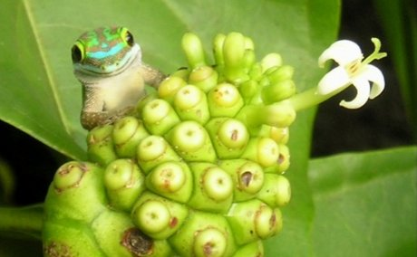
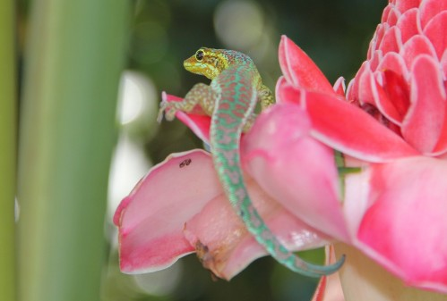

Les éspéces éxogénes
Les différentes taille par éspéce en cm
Caractéristiques :Lieu de résidence : Sud de l’île de la Réunion (bande littoral de 10 km de long)
|  | |
Elévation
Les différentes élévations
|  | Caractéristiques :Lieu de résidence : Hauts de l’île de la Réunion (zones éparses)
| |